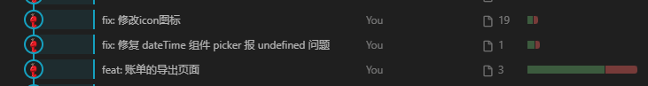

git提交代码注释规范
本文最后更新于 2026年1月16日 下午
统一的 Git 提交规范，可以显著提升项目的可维护性和团队协作效率。
即使是个人项目，长期坚持规范提交，也能让代码历史更加清晰可读。
Commit Message 基本格式
推荐使用如下格式：
1 | |
示例：
1 | |
常用提交类型说明
1️⃣ feat（新增功能）
用于 新增功能或需求。
1 | |
2️⃣ fix（修复 bug）
用于 修复问题或缺陷。
1 | |
3️⃣ perf（性能优化）
用于 性能或体验相关优化，不涉及功能变更。
1 | |
4️⃣ refactor（代码重构）
用于 不影响功能、不修复 bug 的代码结构调整。
1 | |
5️⃣ test（测试相关）
用于 新增或修改测试用例，包括单元测试、集成测试等。
1 | |
6️⃣ docs（文档更新）
仅用于 文档类修改，不涉及代码逻辑。
1 | |
7️⃣ style（代码风格调整）
仅修改 格式、空格、缩进、变量命名等，不改变逻辑。
1 | |
8️⃣ chore（杂项 / 工程配置）
用于 构建流程、依赖、工具配置等变更。
1 | |
9️⃣ revert（回滚）
用于 回滚到之前的提交，一般由 Git 自动生成。
1 | |
🔟 merge（代码合并）
用于 分支合并或同步代码。
1 | |
示例
git提交代码注释规范
https://kitenx.github.io/huyanqun.github.io/2026/01/16/git提交代码注释规范/